规定初始像素覆盖已通过独立数据验收，完整12步与物理安全未通过。Prescribed initial pixel coverage passes the independent DATA audit; full12-step and physical acceptance remain incomplete. Original1280×720; no edits/crop. Every image below is INITIAL, not micro1/final.
{"seed": 1, "proposal_id": 2385, "global_id": 16721, "family": 1}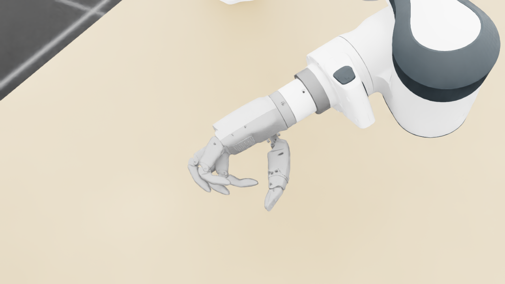
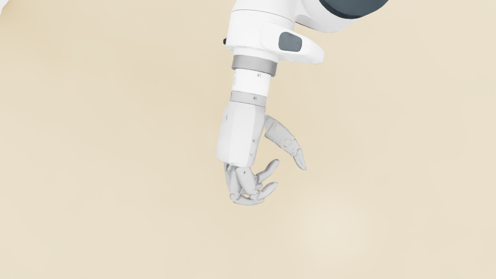
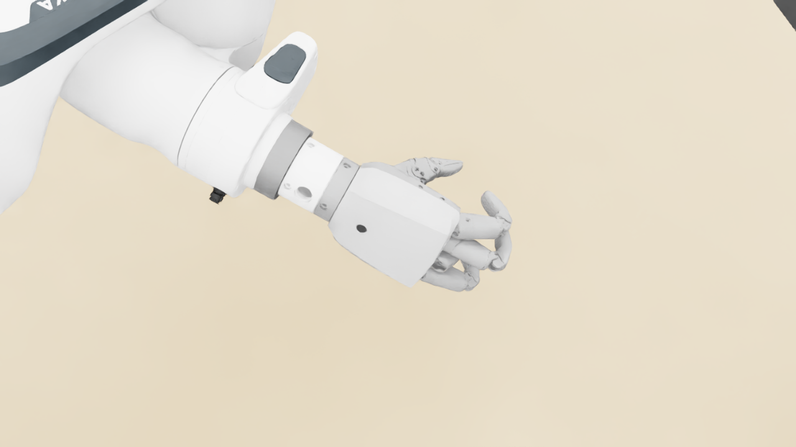
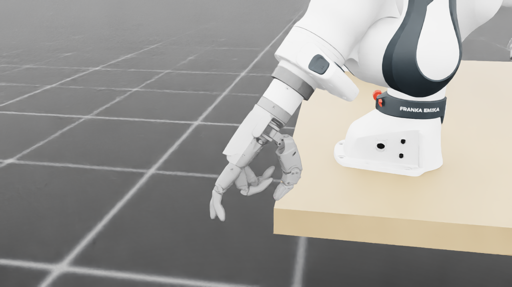
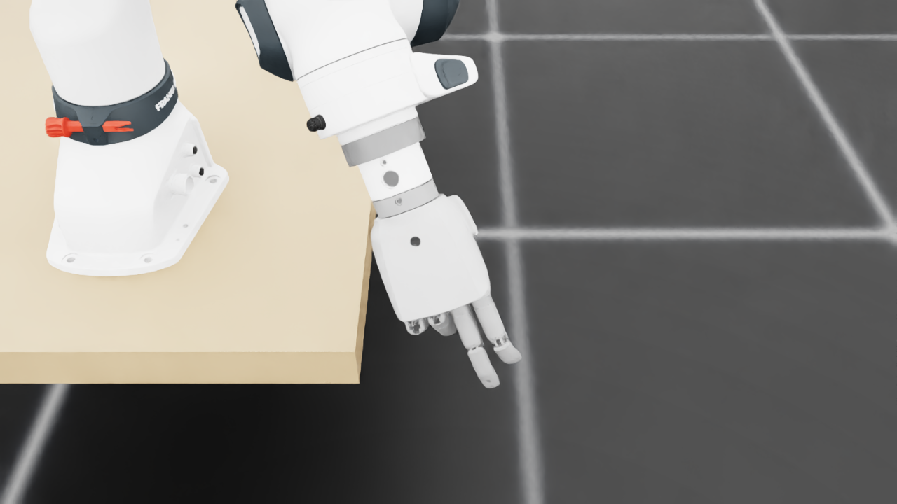
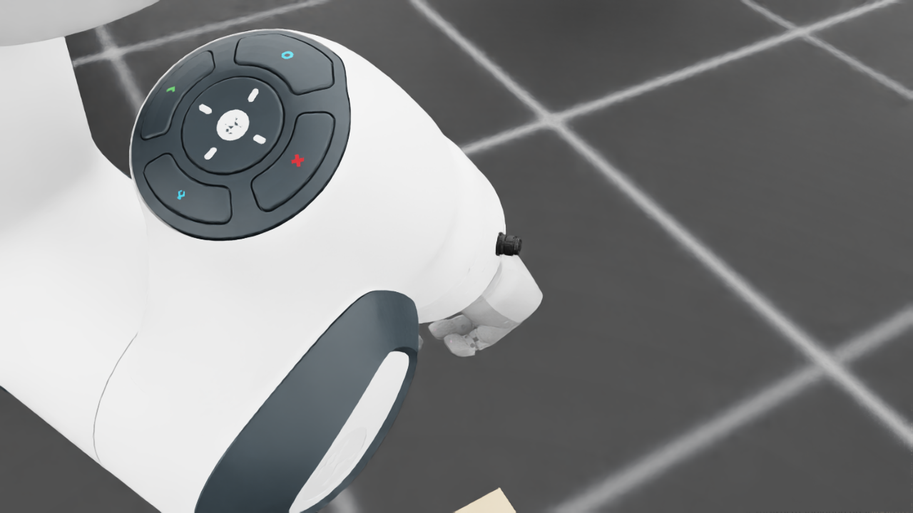
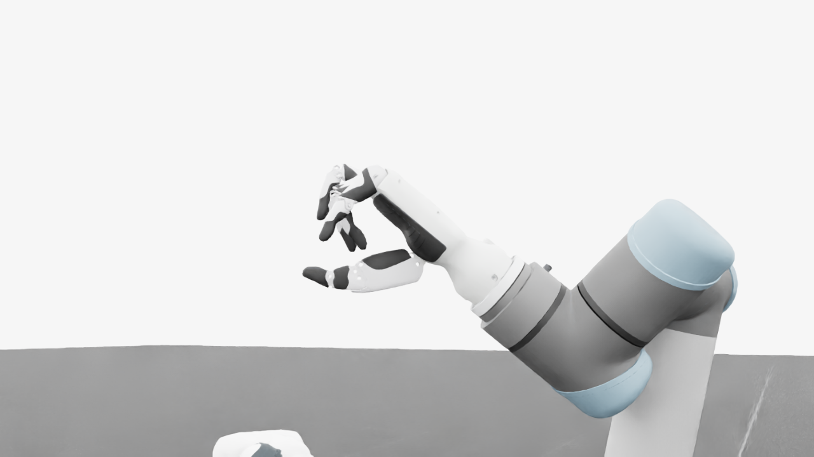
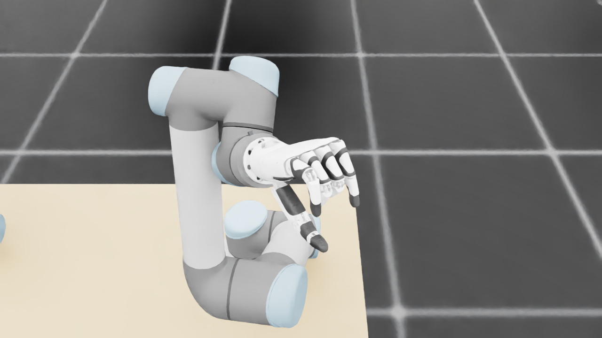
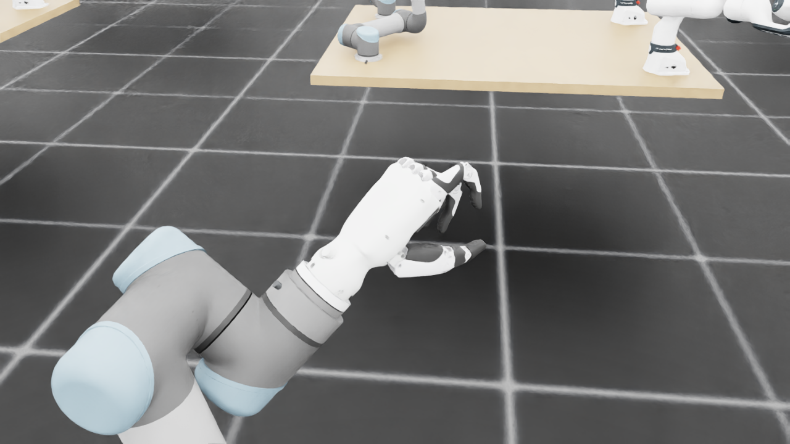
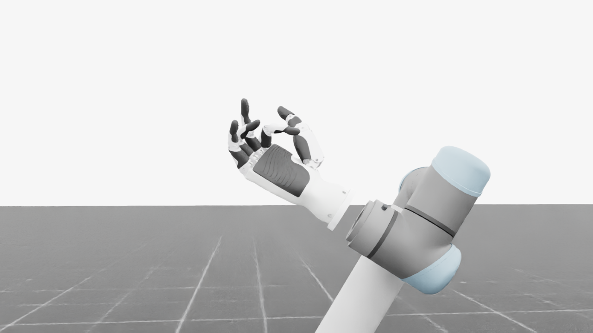
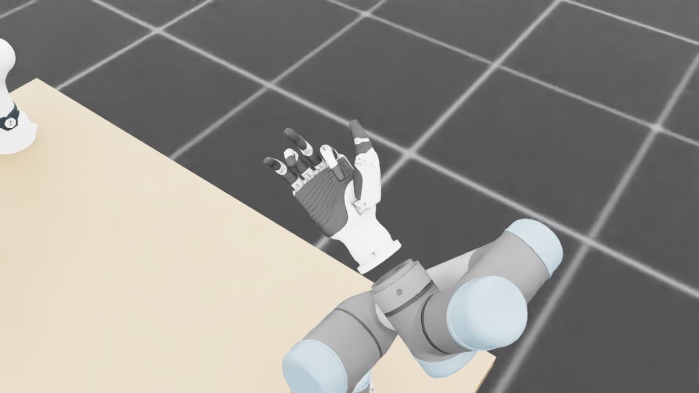
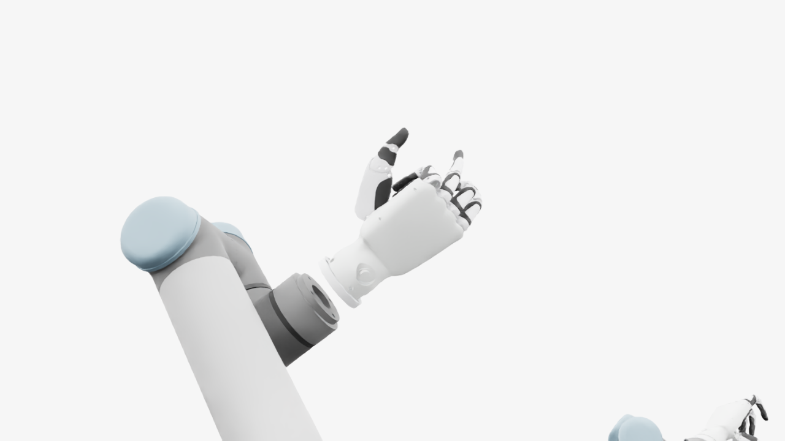
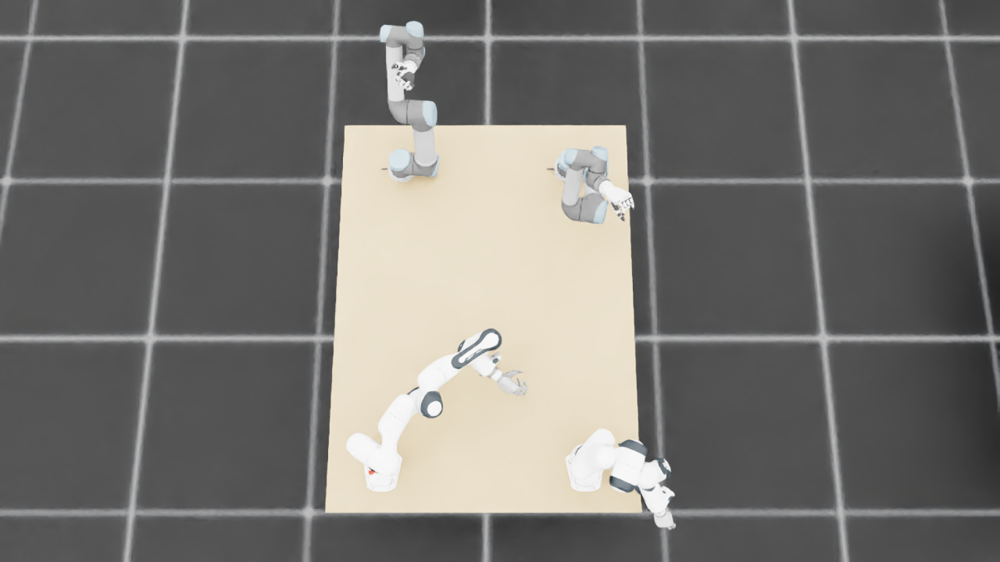
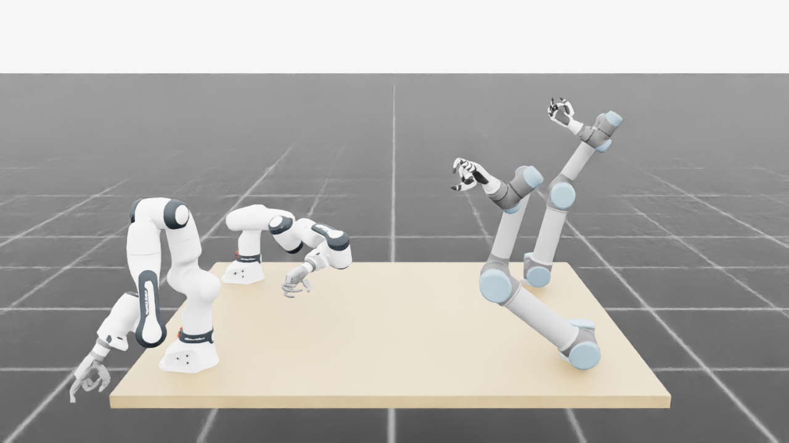
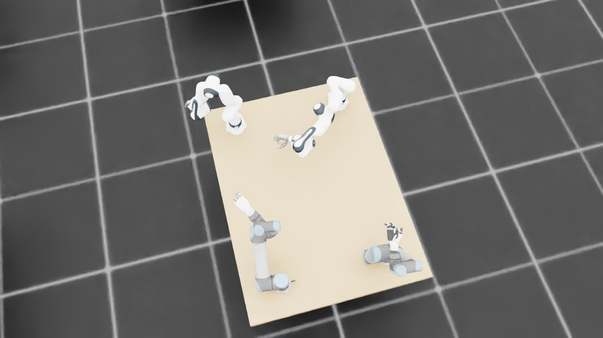
{
"qualified": true,
"arms": {
"F_L": {
"qualified": true,
"palm_visual_peak_pixels": 30398,
"finger_family_peak_pixels": {
"thumb": 8456,
"index": 2827,
"middle": 3268,
"ring": 4120,
"little": 5063
},
"per_native_body_peak_pixels": {
"/World/envs/env_10/F_L/f2_hand/left_hand_base": 37450,
"/World/envs/env_10/F_L/f2_hand/left_index_1": 2096,
"/World/envs/env_10/F_L/f2_hand/left_middle_1": 1568,
"/World/envs/env_10/F_L/f2_hand/left_pinky_1": 3169,
"/World/envs/env_10/F_L/f2_hand/left_ring_1": 2686,
"/World/envs/env_10/F_L/f2_hand/left_thumb_1": 386,
"/World/envs/env_10/F_L/f2_hand/left_index_2": 863,
"/World/envs/env_10/F_L/f2_hand/left_middle_2": 1703,
"/World/envs/env_10/F_L/f2_hand/left_pinky_2": 1894,
"/World/envs/env_10/F_L/f2_hand/left_ring_2": 1926,
"/World/envs/env_10/F_L/f2_hand/left_thumb_2": 4337,
"/World/envs/env_10/F_L/f2_hand/left_thumb_3": 1863,
"/World/envs/env_10/F_L/f2_hand/left_thumb_4": 1870
},
"native_body_visibility_gaps": [],
"all_native_hand_bodies_observed": true,
"full_mesh_coverage_certified": false,
"all_recorded_attempt_peak": {
"qualified": true,
"palm_visual_peak_pixels": 30398,
"finger_family_peak_pixels": {
"thumb": 8456,
"index": 2827,
"middle": 3268,
"ring": 4120,
"little": 5063
},
"per_native_body_peak_pixels": {
"/World/envs/env_10/F_L/f2_hand/left_hand_base": 37450,
"/World/envs/env_10/F_L/f2_hand/left_index_1": 2096,
"/World/envs/env_10/F_L/f2_hand/left_middle_1": 1568,
"/World/envs/env_10/F_L/f2_hand/left_pinky_1": 3169,
"/World/envs/env_10/F_L/f2_hand/left_ring_1": 2686,
"/World/envs/env_10/F_L/f2_hand/left_thumb_1": 386,
"/World/envs/env_10/F_L/f2_hand/left_index_2": 863,
"/World/envs/env_10/F_L/f2_hand/left_middle_2": 1703,
"/World/envs/env_10/F_L/f2_hand/left_pinky_2": 1894,
"/World/envs/env_10/F_L/f2_hand/left_ring_2": 1926,
"/World/envs/env_10/F_L/f2_hand/left_thumb_2": 4337,
"/World/envs/env_10/F_L/f2_hand/left_thumb_3": 1863,
"/World/envs/env_10/F_L/f2_hand/left_thumb_4": 1870
},
"native_body_visibility_gaps": [],
"all_native_hand_bodies_observed": true,
"full_mesh_coverage_certified": false,
"qualification": false
},
"attempts": 3,
"decoded": 3
},
"F_R": {
"qualified": true,
"palm_visual_peak_pixels": 24842,
"finger_family_peak_pixels": {
"thumb": 7884,
"index": 4279,
"middle": 3338,
"ring": 2743,
"little": 2410
},
"per_native_body_peak_pixels": {
"/World/envs/env_10/F_R/f2_hand/right_hand_base": 30248,
"/World/envs/env_10/F_R/f2_hand/right_index_1": 2573,
"/World/envs/env_10/F_R/f2_hand/right_middle_1": 1804,
"/World/envs/env_10/F_R/f2_hand/right_pinky_1": 1159,
"/World/envs/env_10/F_R/f2_hand/right_ring_1": 1162,
"/World/envs/env_10/F_R/f2_hand/right_thumb_1": 845,
"/World/envs/env_10/F_R/f2_hand/right_index_2": 1706,
"/World/envs/env_10/F_R/f2_hand/right_middle_2": 1534,
"/World/envs/env_10/F_R/f2_hand/right_pinky_2": 1251,
"/World/envs/env_10/F_R/f2_hand/right_ring_2": 1581,
"/World/envs/env_10/F_R/f2_hand/right_thumb_2": 4242,
"/World/envs/env_10/F_R/f2_hand/right_thumb_3": 1502,
"/World/envs/env_10/F_R/f2_hand/right_thumb_4": 1295
},
"native_body_visibility_gaps": [],
"all_native_hand_bodies_observed": true,
"full_mesh_coverage_certified": false,
"all_recorded_attempt_peak": {
"qualified": false,
"palm_visual_peak_pixels": 26416,
"finger_family_peak_pixels": {
"thumb": 8999,
"index": 4706,
"middle": 4104,
"ring": 3737,
"little": 4493
},
"per_native_body_peak_pixels": {
"/World/envs/env_10/F_R/f2_hand/right_hand_base": 32146,
"/World/envs/env_10/F_R/f2_hand/right_index_1": 2712,
"/World/envs/env_10/F_R/f2_hand/right_middle_1": 2201,
"/World/envs/env_10/F_R/f2_hand/right_pinky_1": 2872,
"/World/envs/env_10/F_R/f2_hand/right_ring_1": 1776,
"/World/envs/env_10/F_R/f2_hand/right_thumb_1": 962,
"/World/envs/env_10/F_R/f2_hand/right_index_2": 1994,
"/World/envs/env_10/F_R/f2_hand/right_middle_2": 2045,
"/World/envs/env_10/F_R/f2_hand/right_pinky_2": 1641,
"/World/envs/env_10/F_R/f2_hand/right_ring_2": 1961,
"/World/envs/env_10/F_R/f2_hand/right_thumb_2": 4840,
"/World/envs/env_10/F_R/f2_hand/right_thumb_3": 2296,
"/World/envs/env_10/F_R/f2_hand/right_thumb_4": 1881
},
"native_body_visibility_gaps": [],
"all_native_hand_bodies_observed": true,
"full_mesh_coverage_certified": false,
"qualification": false
},
"attempts": 9,
"decoded": 9
},
"U_L": {
"qualified": true,
"palm_visual_peak_pixels": 4270,
"finger_family_peak_pixels": {
"thumb": 8032,
"index": 4137,
"middle": 2776,
"ring": 3255,
"little": 4057
},
"per_native_body_peak_pixels": {
"/World/envs/env_10/U_L/wrist_3_link": 31794,
"/World/envs/env_10/U_L/left_index_1": 2086,
"/World/envs/env_10/U_L/left_little_1": 2634,
"/World/envs/env_10/U_L/left_middle_1": 2003,
"/World/envs/env_10/U_L/left_ring_1": 2630,
"/World/envs/env_10/U_L/left_thumb_1": 374,
"/World/envs/env_10/U_L/left_index_2": 2140,
"/World/envs/env_10/U_L/left_little_2": 1423,
"/World/envs/env_10/U_L/left_middle_2": 1387,
"/World/envs/env_10/U_L/left_ring_2": 1226,
"/World/envs/env_10/U_L/left_thumb_2": 5027,
"/World/envs/env_10/U_L/left_thumb_3": 1955,
"/World/envs/env_10/U_L/left_thumb_4": 1123
},
"native_body_visibility_gaps": [],
"all_native_hand_bodies_observed": true,
"full_mesh_coverage_certified": false,
"all_recorded_attempt_peak": {
"qualified": false,
"palm_visual_peak_pixels": 9769,
"finger_family_peak_pixels": {
"thumb": 11100,
"index": 4724,
"middle": 3868,
"ring": 3255,
"little": 4057
},
"per_native_body_peak_pixels": {
"/World/envs/env_10/U_L/wrist_3_link": 34054,
"/World/envs/env_10/U_L/left_index_1": 2673,
"/World/envs/env_10/U_L/left_little_1": 2634,
"/World/envs/env_10/U_L/left_middle_1": 2003,
"/World/envs/env_10/U_L/left_ring_1": 2630,
"/World/envs/env_10/U_L/left_thumb_1": 609,
"/World/envs/env_10/U_L/left_index_2": 2140,
"/World/envs/env_10/U_L/left_little_2": 1423,
"/World/envs/env_10/U_L/left_middle_2": 2126,
"/World/envs/env_10/U_L/left_ring_2": 1334,
"/World/envs/env_10/U_L/left_thumb_2": 6388,
"/World/envs/env_10/U_L/left_thumb_3": 2745,
"/World/envs/env_10/U_L/left_thumb_4": 1452
},
"native_body_visibility_gaps": [],
"all_native_hand_bodies_observed": true,
"full_mesh_coverage_certified": false,
"qualification": false
},
"attempts": 7,
"decoded": 7
},
"U_R": {
"qualified": true,
"palm_visual_peak_pixels": 8611,
"finger_family_peak_pixels": {
"thumb": 6226,
"index": 2384,
"middle": 2122,
"ring": 1842,
"little": 2866
},
"per_native_body_peak_pixels": {
"/World/envs/env_10/U_R/wrist_3_link": 31809,
"/World/envs/env_10/U_R/right_index_1": 1050,
"/World/envs/env_10/U_R/right_little_1": 1761,
"/World/envs/env_10/U_R/right_middle_1": 1167,
"/World/envs/env_10/U_R/right_ring_1": 1305,
"/World/envs/env_10/U_R/right_thumb_1": 378,
"/World/envs/env_10/U_R/right_index_2": 1334,
"/World/envs/env_10/U_R/right_little_2": 1105,
"/World/envs/env_10/U_R/right_middle_2": 1048,
"/World/envs/env_10/U_R/right_ring_2": 1081,
"/World/envs/env_10/U_R/right_thumb_2": 3707,
"/World/envs/env_10/U_R/right_thumb_3": 1534,
"/World/envs/env_10/U_R/right_thumb_4": 805
},
"native_body_visibility_gaps": [],
"all_native_hand_bodies_observed": true,
"full_mesh_coverage_certified": false,
"all_recorded_attempt_peak": {
"qualified": false,
"palm_visual_peak_pixels": 11158,
"finger_family_peak_pixels": {
"thumb": 8130,
"index": 3044,
"middle": 2577,
"ring": 2172,
"little": 2866
},
"per_native_body_peak_pixels": {
"/World/envs/env_10/U_R/wrist_3_link": 33465,
"/World/envs/env_10/U_R/right_index_1": 1972,
"/World/envs/env_10/U_R/right_little_1": 1761,
"/World/envs/env_10/U_R/right_middle_1": 1325,
"/World/envs/env_10/U_R/right_ring_1": 1305,
"/World/envs/env_10/U_R/right_thumb_1": 378,
"/World/envs/env_10/U_R/right_index_2": 1367,
"/World/envs/env_10/U_R/right_little_2": 1105,
"/World/envs/env_10/U_R/right_middle_2": 1264,
"/World/envs/env_10/U_R/right_ring_2": 1081,
"/World/envs/env_10/U_R/right_thumb_2": 4833,
"/World/envs/env_10/U_R/right_thumb_3": 2147,
"/World/envs/env_10/U_R/right_thumb_4": 1128
},
"native_body_visibility_gaps": [],
"all_native_hand_bodies_observed": true,
"full_mesh_coverage_certified": false,
"qualification": false
},
"attempts": 6,
"decoded": 6
}
},
"wide": {
"qualified": true,
"per_native_object_peak_pixels": {
"/World/envs/env_10/F_L/fr3_link0": 2564,
"/World/envs/env_10/F_L/fr3_link1": 1535,
"/World/envs/env_10/F_L/fr3_link2": 2345,
"/World/envs/env_10/F_L/fr3_link3": 1064,
"/World/envs/env_10/F_L/fr3_link4": 2129,
"/World/envs/env_10/F_L/fr3_link5": 2991,
"/World/envs/env_10/F_L/fr3_link6": 915,
"/World/envs/env_10/F_L/fr3_link7": 710,
"/World/envs/env_10/F_L/fr3_link8": 164,
"/World/envs/env_10/F_L/f2_hand/left_hand_base": 870,
"/World/envs/env_10/F_L/f2_hand/left_index_1": 26,
"/World/envs/env_10/F_L/f2_hand/left_middle_1": 32,
"/World/envs/env_10/F_L/f2_hand/left_pinky_1": 85,
"/World/envs/env_10/F_L/f2_hand/left_ring_1": 41,
"/World/envs/env_10/F_L/f2_hand/left_thumb_1": 16,
"/World/envs/env_10/F_L/f2_hand/left_index_2": 91,
"/World/envs/env_10/F_L/f2_hand/left_middle_2": 97,
"/World/envs/env_10/F_L/f2_hand/left_pinky_2": 82,
"/World/envs/env_10/F_L/f2_hand/left_ring_2": 84,
"/World/envs/env_10/F_L/f2_hand/left_thumb_2": 91,
"/World/envs/env_10/F_L/f2_hand/left_thumb_3": 54,
"/World/envs/env_10/F_L/f2_hand/left_thumb_4": 56,
"/World/envs/env_10/F_R/fr3_link0": 4921,
"/World/envs/env_10/F_R/fr3_link1": 5200,
"/World/envs/env_10/F_R/fr3_link2": 3106,
"/World/envs/env_10/F_R/fr3_link3": 3967,
"/World/envs/env_10/F_R/fr3_link4": 3832,
"/World/envs/env_10/F_R/fr3_link5": 6380,
"/World/envs/env_10/F_R/fr3_link6": 2543,
"/World/envs/env_10/F_R/fr3_link7": 1369,
"/World/envs/env_10/F_R/fr3_link8": 233,
"/World/envs/env_10/F_R/f2_hand/right_hand_base": 1563,
"/World/envs/env_10/F_R/f2_hand/right_index_1": 192,
"/World/envs/env_10/F_R/f2_hand/right_middle_1": 41,
"/World/envs/env_10/F_R/f2_hand/right_pinky_1": 94,
"/World/envs/env_10/F_R/f2_hand/right_ring_1": 117,
"/World/envs/env_10/F_R/f2_hand/right_thumb_1": 65,
"/World/envs/env_10/F_R/f2_hand/right_index_2": 139,
"/World/envs/env_10/F_R/f2_hand/right_middle_2": 32,
"/World/envs/env_10/F_R/f2_hand/right_pinky_2": 75,
"/World/envs/env_10/F_R/f2_hand/right_ring_2": 125,
"/World/envs/env_10/F_R/f2_hand/right_thumb_2": 324,
"/World/envs/env_10/F_R/f2_hand/right_thumb_3": 115,
"/World/envs/env_10/F_R/f2_hand/right_thumb_4": 93,
"/World/envs/env_10/U_L/base_link": 276,
"/World/envs/env_10/U_L/shoulder_link": 1172,
"/World/envs/env_10/U_L/upper_arm_link": 11312,
"/World/envs/env_10/U_L/forearm_link": 3313,
"/World/envs/env_10/U_L/wrist_1_link": 1705,
"/World/envs/env_10/U_L/wrist_2_link": 1162,
"/World/envs/env_10/U_L/wrist_3_link": 1636,
"/World/envs/env_10/U_L/left_index_1": 99,
"/World/envs/env_10/U_L/left_little_1": 162,
"/World/envs/env_10/U_L/left_middle_1": 111,
"/World/envs/env_10/U_L/left_ring_1": 130,
"/World/envs/env_10/U_L/left_thumb_1": 8,
"/World/envs/env_10/U_L/left_index_2": 131,
"/World/envs/env_10/U_L/left_little_2": 98,
"/World/envs/env_10/U_L/left_middle_2": 125,
"/World/envs/env_10/U_L/left_ring_2": 75,
"/World/envs/env_10/U_L/left_thumb_2": 246,
"/World/envs/env_10/U_L/left_thumb_3": 121,
"/World/envs/env_10/U_L/left_thumb_4": 65,
"/World/envs/env_10/U_R/base_link": 235,
"/World/envs/env_10/U_R/shoulder_link": 983,
"/World/envs/env_10/U_R/upper_arm_link": 6476,
"/World/envs/env_10/U_R/forearm_link": 2480,
"/World/envs/env_10/U_R/wrist_1_link": 1013,
"/World/envs/env_10/U_R/wrist_2_link": 996,
"/World/envs/env_10/U_R/wrist_3_link": 1334,
"/World/envs/env_10/U_R/right_index_1": 47,
"/World/envs/env_10/U_R/right_little_1": 75,
"/World/envs/env_10/U_R/right_middle_1": 35,
"/World/envs/env_10/U_R/right_ring_1": 38,
"/World/envs/env_10/U_R/right_thumb_1": 22,
"/World/envs/env_10/U_R/right_index_2": 70,
"/World/envs/env_10/U_R/right_little_2": 47,
"/World/envs/env_10/U_R/right_middle_2": 48,
"/World/envs/env_10/U_R/right_ring_2": 51,
"/World/envs/env_10/U_R/right_thumb_2": 168,
"/World/envs/env_10/U_R/right_thumb_3": 71,
"/World/envs/env_10/U_R/right_thumb_4": 42,
"/World/envs/env_10/TableF": 86186,
"/World/envs/env_10/TableU": 82577
},
"arm_peak_pixels": {
"F_L": 16033,
"F_R": 34526,
"U_L": 21323,
"U_R": 12944
},
"table_peak_pixels": {
"TableF": 86186,
"TableU": 82577
},
"critical_body_peak_pixels": {
"/World/envs/env_10/U_L/forearm_link": 3313,
"/World/envs/env_10/U_L/wrist_2_link": 1162,
"/World/envs/env_10/U_R/forearm_link": 2480,
"/World/envs/env_10/U_R/wrist_2_link": 996
}
},
"raw_attempt_count": 33,
"PNG_count": 33,
"angle_records": 33,
"max_actual_angle_identity_error_deg": 5.684341886080802e-14,
"held_snapshot_checks": 950,
"universal_visibility_impossible": false,
"full_mesh_coverage_certified": false
}